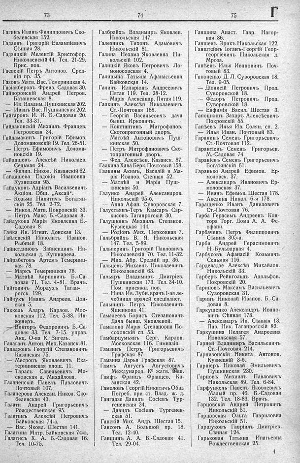

Лист источника 375
Скан

Распознанный текст
73
74
75
Г
Гагинъ Иванъ Филипповичъ Ско-
белевская 152.
Гадаевъ Григорій Евлампіевичъ
Сѣнная 28.
Гадзяцкій Мелентій Христофор.
Николаевскій 44. Тел. 21-29.
Прис. пов.
Гаевскій Петръ Антонов. Сред-
ній пр. 35.
Газовъ Матв. Вас. Темерницкая 4.
Газіакберовъ Фреиз. Садовая 30.
Гайворонскій Андрей Петров.
Баташевская 8.
— Ив. Владим. Пушкинская 202.
— Иванъ Вас. Пушкинская 202.
Гайгаровъ И. И. Б.-Садовая 20.
Тел. 33-31.
Гайдаковскій Михаилъ Францев.
Петровская 34.
Гайдамакинъ Григорій Ефимов.
Доломановскій 19. Тел. 26-51.
— Петръ Ефимовичъ Долома-
новскій 19.
Гайдашевъ Алексѣй Николаев.
Седьмая 24.
— Филип. Никол. Казанскій 62.
Гайдашева Евдокія Ивановна
Кузнецкая 95.
Гайдуковъ Адріанъ Васильевичъ
Акціон. Общ. „Аксай“.
— Козьма Никитичъ Богатян-
скій 25. Тел. 2-72.
— Никол. Матв. Покровскій 33.
— Петръ Макс. Б.-Садовая 8.
Гайдукова Марія Яковлевна Б.-
Садовая 8.
Гайка Ив. Игнат. Донская 13.
Гайлевскій Ипполитъ Иванов.
Рыбный 18.
Гайнетдиновъ Зайнеидинъ Ни-
кольская д. Кушнарева.
Гайрабетовъ Артемъ Темерниц-
кая 78.
— Маркъ Темерницкая 78.
— Матвѣй Карповичъ Б.-Са-
довая 71. Тел. 4-81. Врачъ.
Гайтовичъ Мордухъ Таган-
рогск. 129.
Гайчукъ Иванъ Андреев. Дон-
ская 5.
Гаккель Алдръ Карлов. Мос-
ковская 112. Тел. 5-88. Ин-
женеръ.
— Викторъ Федоровичъ Б.-Са-
довая 33. Тел. 7-15. управ.
Акц. О-ва К. Зигель.
Галаганъ Антон. Мих. Казанск. 81.
Галаджевъ Георгій Степановичъ
Казанская 75.
— Месропъ Яковлевичъ Ека-
терининская площ. 11.
— Тарасъ Савельевичъ Мо-
сковская д. Михайлова.
Галаненскій Павелъ Павловичъ
Почтовый 107.
Галаперова Алексан. Никол. Ско-
белевская 43.
Галати Андрей Григорьевичъ
Рождественская 95.
Галатинъ Алексѣй Петровичъ
Байковская 74-а.
— Вас. Яковл. Шестая 141.
Галатина Матр. Байковская 74-а.
Галатисъ Х. А. Б.-Садовая 16.
Тел. 10-75.
Галбрайхъ Владимиръ Яковлев.
Никольская 147.
Галезникъ Тихонъ Адамовичъ
Никольскій 81.
Галина Нехама Яковлевна Ни-
кольскій 102.
Галицкій Яковъ Петровичъ Ло-
моносовская 4.
Галицына Татьяна Афанасьевна
Байковская 14.
Галичъ Илларіонъ Андреевичъ
Пятая 119. Тел. 28-12.
— Марія Александр. Пятая 119.
Галкинъ Алексѣй Николаевичъ
Ст.-Почтовая 168.
— Георгій Васильевичъ дача
бывш. Ирковичъ.
— Константинъ Митрофанов.
Скотопригонный дворъ.
— Матвѣй Антоновичъ Пуш-
кинская 50.
— Петръ Митрофановичъ Ско-
топригонный дворъ.
— Фед. Алексѣев. Казанск. 87.
Галкина Хава Берк. Почтовый 158.
Галкины Акимъ, Василій и Ма-
рія Иванов. Степная 52.
— Матвѣй и Марія Пуш-
кинская 50.
Галунко Андрей Александров.
Никольскій 95-б.
-- Анна Афан. Суворовская 7.
Галустьянъ-Теръ Камсаръ Сар-
кисовъ Таганрогскій 30.
Галушкинъ Михаилъ Степанов.
Кузнецкая 144.
— Родіонъ Мих. Церковная 7.
Галбрайхъ В. Я. Никольская
147. Тел. 5-89.
Гальперинъ Григорій Павловичъ
Николаевскій 70. Тел. 11-32.
— Мих. Абр. Средній пр. 36.
Гальцевъ Михаилъ Николаевичъ
Николаевскій 63.
Гальяръ Владимиръ Дмитріев.
Пушкинская 173. Тел. 34-10.
Пом. присяжн. пов.
— Нина Ив. Зубн. врачъ I-ая ле-
чебница врачей спеціалист.
Галынинъ Петръ Николаевичъ
Ященкова 41.
Гамалеевъ Борисъ Степановичъ
Дача бывш. Яковлевой.
Гамалова Марія Степановна По-
соховскій сп. 53.
Гамбарцумьянъ Серг. Карлов.
Московская 116. Гимназія.
Гамзинъ Петръ Григорьевичъ
Графская 87.
Гамзина Дарья Графская 87.
Гаммъ Августъ Августовичъ
Международ. К° жатв. маш.
Гамфъ Францъ Францев. Ка-
занская 42.
Гамоловъ Георгій Никитичъ Общ.
Потреб. при ст. Влад. ж. д.
Гангадзе Давидъ Сосіевъ Тур-
геневская 34.
— Давидъ Сосіевъ Тургенев-
ская 51.
Ганскій Мих. Андр. Шестая 15.
Гансонъ А. Большой пр. 18.
Тел. 12-40.
Ганшинъ А. А. Б.-Садовая 41.
Тел. 29-04.
Ганшина Анаст. Гавр. Нагор-
ная 86.
Ганшевъ Эрихъ Никольская 122.
Ганштейнъ Іоганъ-Георгій Геор-
георгіевичъ Никольская д.
Мроза.
Ганѣевъ Илья Ивановичъ Поч-
товый 83.
Гапоненко Д. Л. Суворовская 18.
Тел. 9-05.
— Діонисій Петровичъ Прод.
Суворовской 18.
— Федоръ Петровичъ Прод.
Суворовской 18.
— Евфимія Васил. Шестая 3.
Гапошкинъ Захаръ Алексѣевичъ
Покровскій 55.
Гапѣевъ Илья Ив. Солян. сп. 2.
— Илья Иван. Почтовый 83.
Гаранинъ Семенъ Григорьевичъ
Ст.-Почтовая 112.
Гарантіевъ Семенъ Григорьев.
М.-Садовая 74.
Гараніевъ Семенъ Григорьевичъ
Богатянскій 61.
Гаранько Андрей Ефимов. Ер-
моловск. 37.
— Александръ Ивановичъ Ер-
моловская 37.
— Иванъ Ефимов. Шестая 178.
— Акелина Никол. 6-я 178.
Гаращенко Иванъ Даниловичъ
Ст.-Почтовая 76.
Гарба Герасимъ Андреевъ Кон-
тора Торг. Дома А. А. Фе-
офани.
Гарбачевъ Петръ Филипповичъ
Сѣнная 305-а.
Гарби Андрей Герасимовичъ
Н.-Бульварная 4.
Гарбусовъ Афанасій Козьмичъ
Седьмая 116.
Гарделадзе Алексѣй Михайлов.
Никольскій 33.
Гарберъ Рейнгольдъ Адольфов.
Покровскій 20.
Гариновъ Максимъ Васильевичъ
Суворовская 31.
Гаринъ Николай Иванов. Б.-Са-
довая 8.
Гаркушенко Александръ Ивано-
вичъ Сѣнная 178.
— Александръ Ив. Сѣнная 13.
— Пав. Ник. Таганрогскій 82.
Гаркушина Пелагея Андреевна
Извольская 57.
Гарней Владимиръ Васильевичъ
Ст.-Почтовая 214.
Гарнизонскій Никита Антонов.
Кузнецкій 3-б.
Гарніеръ Николай Эмильевичъ
Пушкинская 230.
Гарновъ Михаилъ Павловичъ
Никольская 89. Тел. 6-84.
Гарфункель Павелъ Яковлевичъ
Малый пр. 46. Б.-Садовая
132. Тел. 18-83. Врачъ.
Гарцовскій Андрей Петровичъ
Никольскій 51.
Гарцовская Ольга Гавриловна
Никольскій 51.
Гаршуковъ Гавріилъ Дмитріев.
Сѣнная 124.
Гарьковая Татьяна Ипатьевна
Рождественская 25.
4